Fécamp 2004


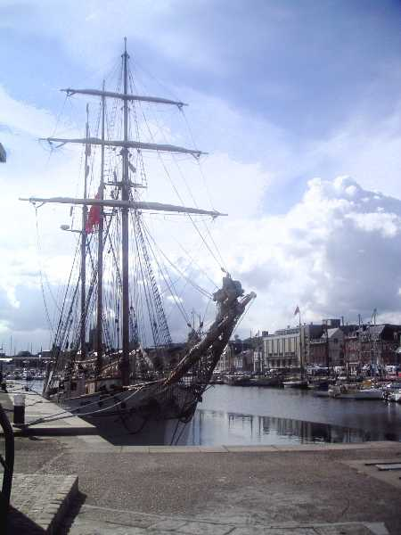
Ce festival était organisé par le club local "Atout Vent" dans le cadre des journées "Esti'Voiles" qui regroupaient aussi dans le port de Fécamp des "vieux gréements" et diverses animations basées sur les métiers de la pêche ou de la rue, et la musique puisque c'en était la fête.

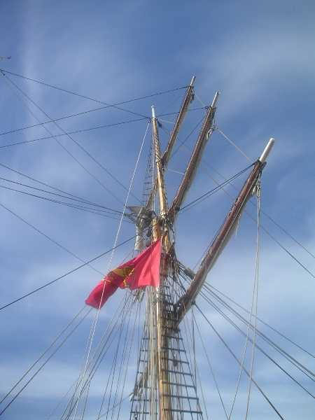
Les mâtures montraient que, si les cerfs-volistes sont forts sur les vergues et la ficelle, les marins ne sont pas mauvais non plus !

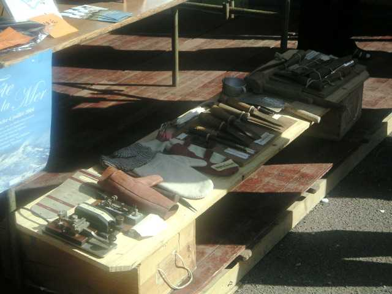
Ils ont même leurs jardins du Vent, et d'une dimension impressionnante !

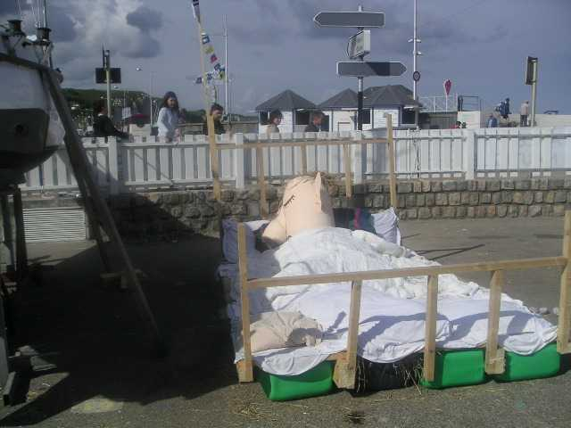

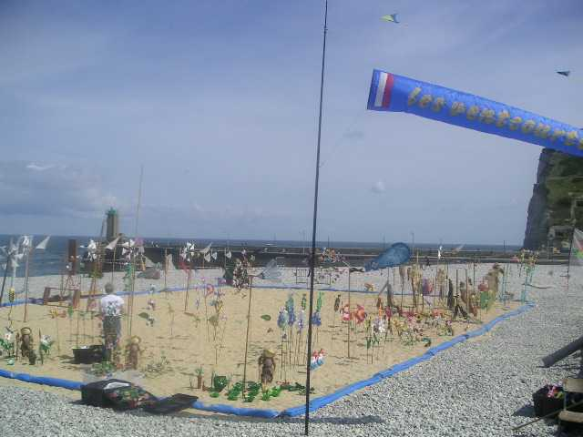
Sur la plage (sic) de Fécamp, se sont plantés (pas trop profond !) les jardins du vent, avec en toile de fond les falaises, la mer, les vieux gréements qui rentrent au port dont on voit l'entrée près du phare.

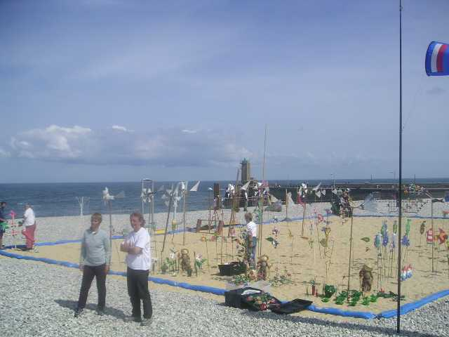

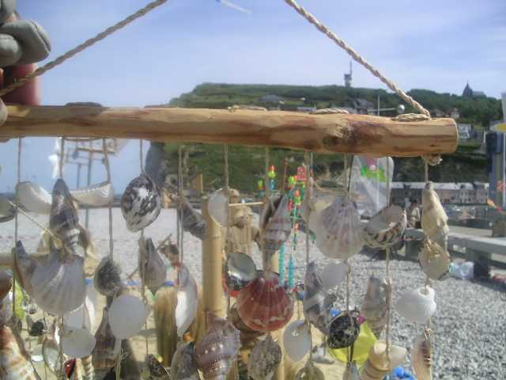
Et les cerfs-volants, me direz-vous ? Eh bien j'ai été pas mal occupé, et je n'ai pas trop eu le temps d'en photographier, je vous raconte.
Megoel volait tranquille, donc, par un vent de mer force 2 à 3 bien stable où il ne pouvait rien arriver. Dans les cirrus, les paillettes de glace généraient un halo bordé d'un arc en ciel qui entourait le soleil (c'est pas facile à photographier, ça...).

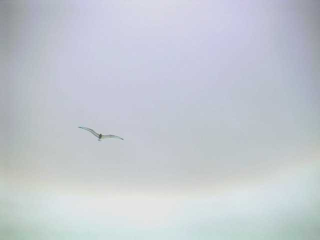
Mais un belge volait par là. J'avais déjà réglé un peu son cerf-volant à Stella-Plage car là-bas, il ne volait pas du tout. J'aurais mieux fait de rester sous ma tente ce jour là : il est parti dans un grand cercle (je rappelle : force 2, vent bien lisse de la mer...) et a ramassé 3 lignes. Comme son propriétaire tirait comme un forcené sur la ligne au lieu de relâcher, ce qui aurait permis de rattraper la situation, il a coupé les lignes de 3 cerfs-volants avant de casser la sienne propre (que beaucoup soupçonnent d'ailleurs d'être en Kevlar, mais ce serait franchement incivil !). Megoel, parti avec 200 m de ligne, s'est payé un vol libre (très beau, de l'avis général) de plusieurs minutes avant de se poser là-bas quelque part, très loin.

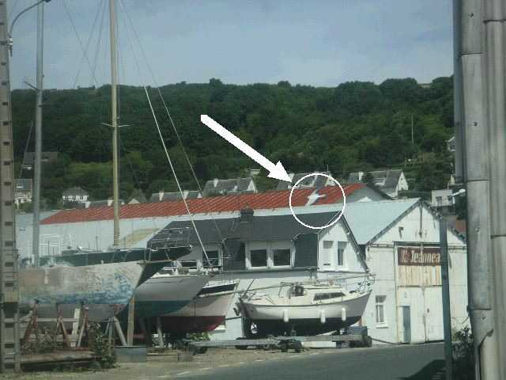
Départ en voiture, recherche dans une zone à peu près cernée, et on le retrouve... posé proprement sur le toit d'un hangar à bateaux. Après, ça ressemble à la Carte au Trésor. Un bateau qui avait vu "l'atterrissage" vient nous prendre et nous amène là où il avait rassemblé les 150 m de ficelle restante.

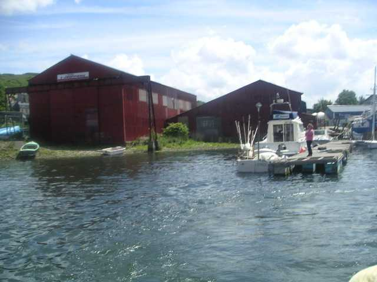

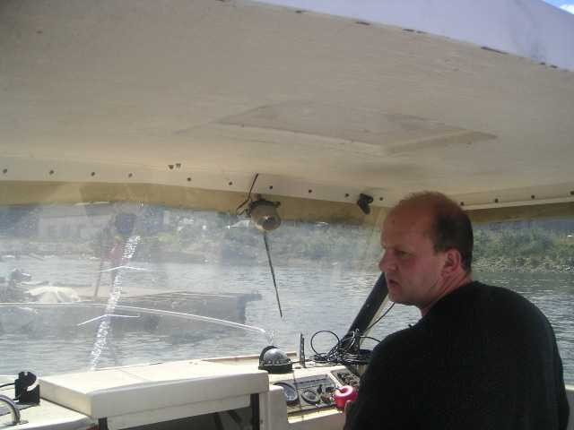
Il nous ramène ensuite aimablement au point de départ. Mais après ? Je tire sur la ficelle bêtement, elle se coupe sur une tôle ondulée rouillée.

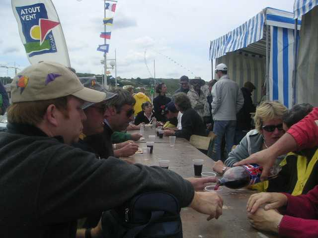
Bon, rien à faire pour le moment, on revient sur la plage, on se calme en prenant l'apéro...

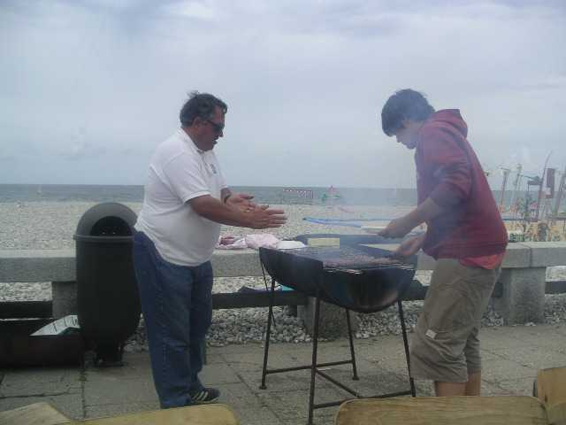
c'est les merguez qui bavent sur le feu !
et en se régalant du barbecue généreusement préparé par Atout Vent.

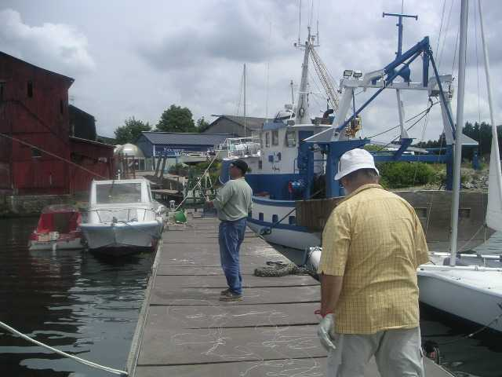
mais il a une vieille habitude des sauvetages de CVs !
Après manger, on y repique. On essaye avec 2 méthodes : François, avec son cerf-volant muni d'un grappin bricolé (pas facile, il fallait opérer du bout d'un appontement étroit et passablement décati...) et Sylvien à l'aide d'une perche de 9,5 m de long que, toujours précautionneux, il transporte partout avec lui.

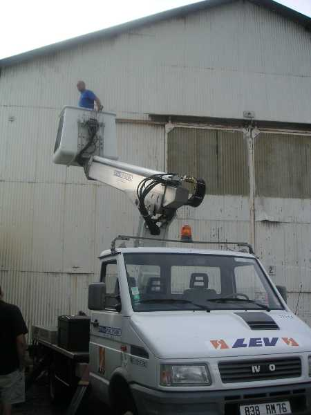
Deux heures plus tard, résultat néant. Nous nous replions sur nos bases et les GO remuent ciel et terre pour trouver un moyen : les pompiers ne veulent pas, mais la ville nous met en oeuvre un camion-nacelle.

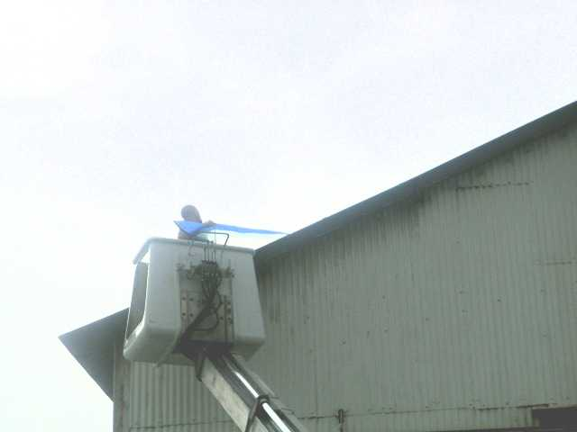
C'est plus lourd comme méthode, mais au moins, ça finit par marcher !

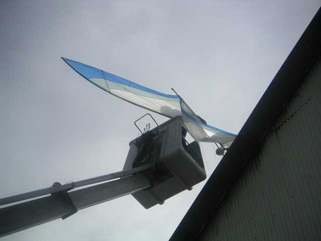

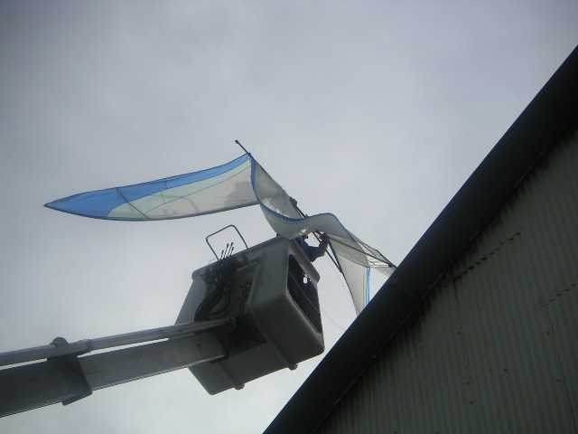

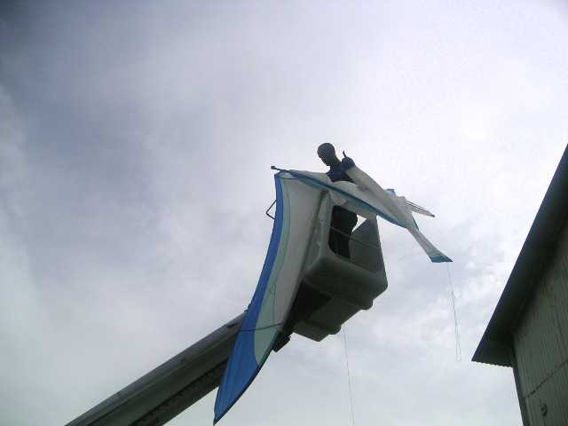
Après ça, plus envie de voler, je dis merci à la ville, aux organisateurs, aux copains qui m'ont aidé et je rentre à la maison... en laissant mes cales sur le parking ! Pas mon jour, et pas fait beaucoup de cerf-volant ce dimanche ! Déjà que je n'étais pas venu le samedi à cause d'un Conseil d'Administration (du CVCF) : petit week-end, et pis il faudra réparer Megoel... Mais je reviendrai prendre ma revanche : l'organisation sympa, les bateaux, les cerfs-volants, les falaises (tout à droite, la Manne Porte d'Etretat), c'est grandiose.